What is Cleo Comply?
Cleo Comply is an AI-powered regulatory intelligence platform. It monitors thousands of regulations across 106+ countries, cross-references them with your products and markets, and tells you exactly what to do — in plain language, adapted to your role.
Screenshots in this documentation use a demo account with sample data.
Real-time monitoring
Automated scans of 3,700+ official sources — federal registers, agency publications, official journals.
Product × regulation matching
Every signal is cross-referenced with your specific products and markets from your catalog.
Role-based intelligence
Summaries and action plans adapt to your role — DPO, quality manager, legal counsel.
Actionable output
Legal obligations, action plans, deadlines, and responsible parties — ready to act on.
countries covered
regulations in knowledge base
sources monitored
regulatory authorities indexed
texts analyzed
Throughout this doc: ℹ️ = how it works · 💡 = what smart teams do · ⚠️ = do this or face consequences
🚀 Quick Start
Cleo does the heavy lifting. Enter your company domain — the AI handles the rest.
Sign up & enter your domain
Create your account at insight.cleolabs.co. Enter your company domain (e.g. acme.com). That's all Cleo needs to get started.
Wait 15–30 minutes while AI builds your profile
Cleo scans your domain and automatically generates your full regulatory landscape:
- 🏭 Products — your catalog, detected from public data
- 🌍 Countries — your markets, identified from your footprint
- ⚖️ Regulations — all applicable laws, cross-referenced
- 🏛 Authorities — the regulatory bodies that matter to you
- 📊 Signals — your first set of regulatory intelligence
Configure your Profile
While the scan runs, set your Department and Role in Settings → Profile. This is critical — it determines how every summary and action plan is written. A misconfigured profile means generic summaries that miss what matters for your function.
Review & correct
Think of this as proofreading the AI's homework. It does 95% of the work. You just refine:
- ✅ Products — add missing ones, remove irrelevant ones
- ✅ Countries — confirm your real markets
- ✅ Regulations — adjust priority levels
- ✅ Authorities — remove any not relevant to your sector
For example: if Cleo detected "Industrial Refrigeration Equipment" but you only manufacture washing machines, remove it. If a key market like Brazil is missing, add it.
You're live
Your dashboard is now active. Cleo monitors your regulatory landscape daily and surfaces what needs action. Configure your scan frequency and notifications to stay ahead.
📊 Dashboard
Start here every morning. Four KPI cards tell you what changed overnight. Your signal feed tells you what to do about it.
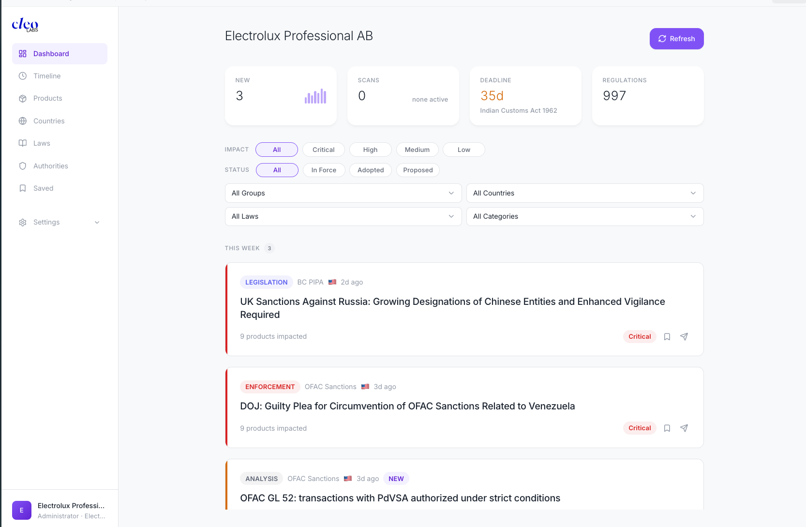
KPI Cards — read these first
- New signals — your to-do list for the day. Start here.
- Exposure — your overall risk level. If it jumped, dig into the signal feed to find out why.
- Next deadline — days until your most urgent regulatory milestone. If it's under 30, open the Timeline now.
- Regulations — total laws under watch. Reference number; you rarely need to act on this.
Filter your feed
Use filters to cut the noise and focus on what matters right now:
- Impact level — filter by Critique / Élevé / Modéré / Faible. In daily triage, start with Critique.
- Status — Adopted is your anticipation window: laws voted but not yet enforced. Use this to get ahead.
- Dropdowns — slice by product, country, regulation, or category (Analyse / Sanction / Législation) to focus on a specific market or product line.
Signal Feed — act on each signal
Signals are grouped as Today, This Week, and Older. Each card shows the law, the country, the risk level, which of your products are affected, and two quick actions:
- Bookmark (🔖) — save for your weekly review session
- Share signal (✈️) — forward to a colleague who owns this topic
Refresh
The purple Refresh button triggers a new scan on demand. Use it when you need fresh data before a meeting or after a regulatory news event. Each scan consumes credits from your plan.
📋 Signal Card
Click any signal to open its full card. This is where hours of regulatory research are done for you — read it, decide, act.
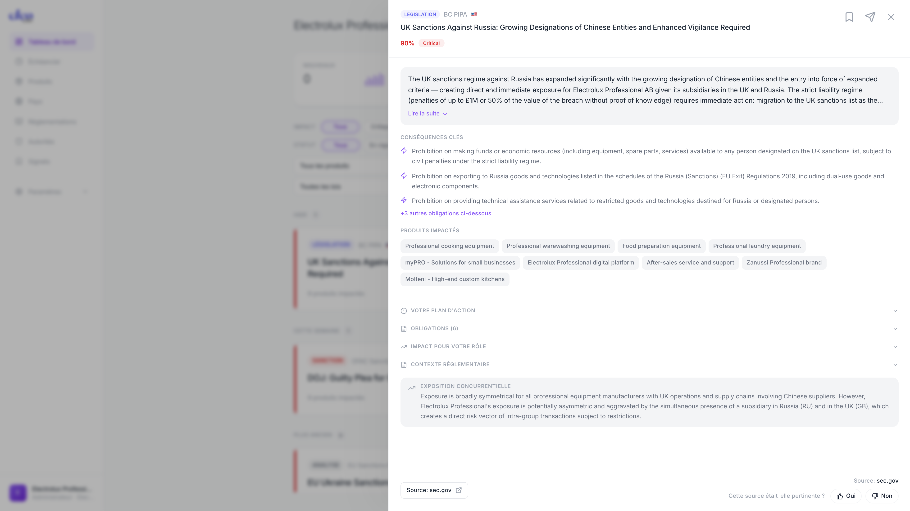
Start here — 3 steps to process a signal
- Read the AI summary — it's written for your role and starts with the business impact on your organization. Click "Read more ▼" if you need the full picture.
- Check impacted products — these are your actual catalog items, not generic categories. If something important is missing, update your Products catalog.
- Open the action plan — concrete tasks with deadlines and responsible parties, ready to assign. This is your output from the card.
Go deeper — when you need more detail
⊕ Obligations — the full legal checklist
📈 Impact for your role
📖 Regulatory context
📈 Competitive exposure
Source & feedback
At the bottom: a direct link to the original source document (e.g. sec.gov). Always verify critical signals against the source before acting. The "Was this source relevant?" feedback (👍 / 👎) trains the AI to improve signal quality for your organization.
🗂 Catalog
The catalog is your regulatory perimeter. It defines what Cleo monitors and how signals get matched to your business.
The catalog has four pages: Products, Countries, Regulations, and Authorities. The quality of your catalog directly determines the relevance of your signals — keep it accurate.
📦 Products
Define your product portfolio. Cleo cross-references every regulation against this list to tell you which products are exposed.
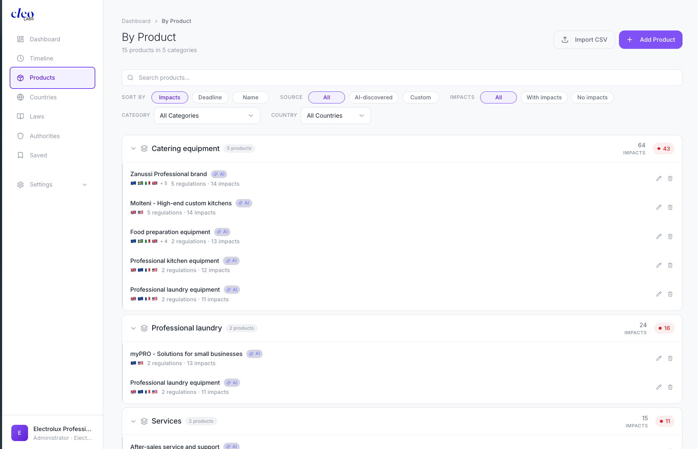
Products are organized in collapsible categories. Each entry shows country flags for monitored markets, regulation count, impact count, and a red badge for critical impacts.
Filter by "With impacts" to see only products that need attention. That's your shortlist for the weekly compliance review.
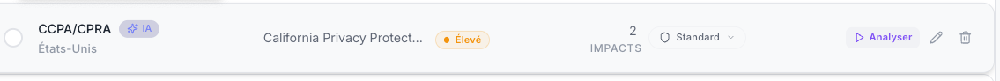
🌍 Countries
Tell Cleo where you sell. Each country you add is immediately monitored for local regulations and cross-referenced with your product catalog.
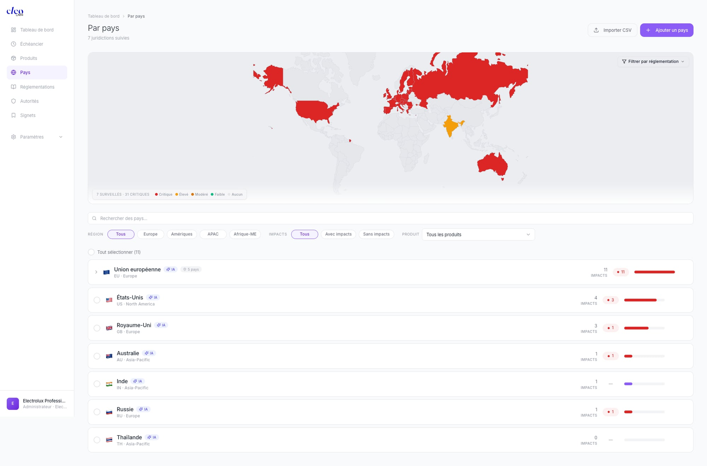
The color-coded world map gives you an instant exposure read: red = critical, orange = high, grey = not monitored. Below it, each country entry shows the region, impact count, and an impact bar.
Two entries worth special attention:
- European Union expands into individual member states — each with its own transposition specifics. Don't assume EU coverage means identical rules everywhere.
- United States expands by state — critical because state-level rules (e.g. California Prop 65) are often stricter than federal.
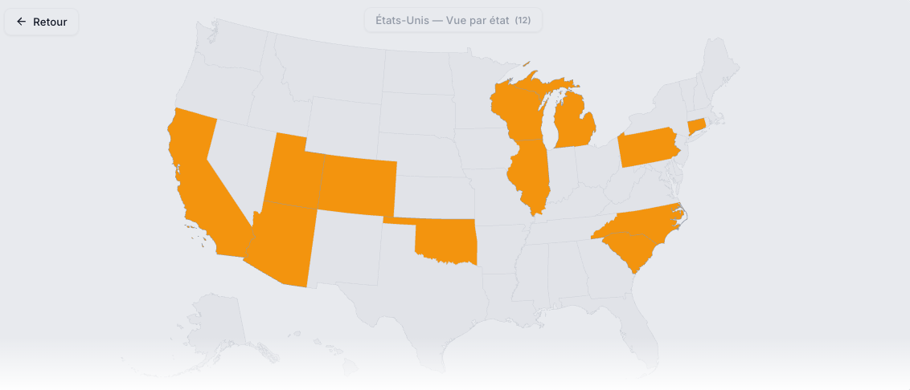
⚖️ Regulations
996 regulations already in the database, grouped by domain. Review this list to make sure Cleo is watching everything that matters for your sector.
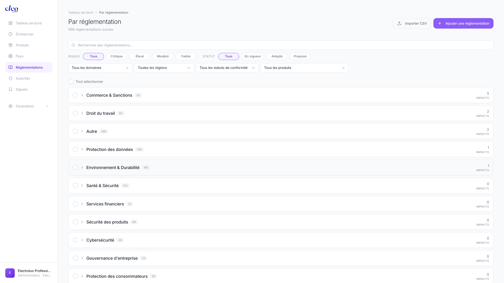
Regulations are grouped by domain (Commerce & Sanctions, Data Protection, Environment, Health & Safety, etc.), each collapsible with a total count and impact count.
Filter by Adopted to surface regulations that have been voted but aren't enforced yet — this is your preparation window. Act before enforcement begins, not after.
Inside a regulation file
Click any regulation to open its detail view. Here's what you'll find:
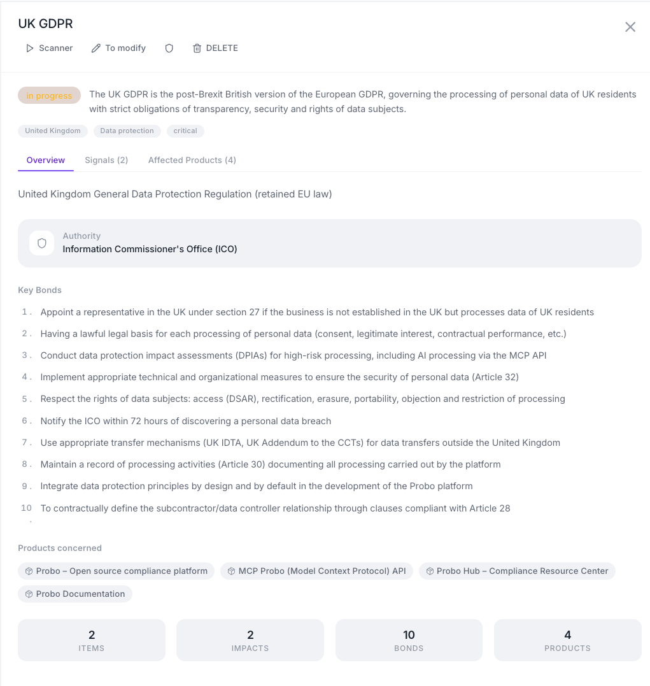
Top right — quick actions
- Scanner — run a compliance analysis of your products against this regulation
- To modify — manually edit the file (description, tags, obligations...)
- Delete — remove the file from your repository
The status badge
The "in progress" label shows where this regulation stands in your tracking workflow. You can follow its evolution over time.
The three tabs — the heart of the file
- Overview (default) — a summary view: description, supervising authority (here the ICO), and the Key Bonds = the key obligations extracted from the text (10 in total)
- Signals — recently detected signals on this regulation (new guidelines, enforcement actions, consultations...)
- Affected Products — the products in your portfolio exposed to this regulation
Key Bonds
This is the core value of the file: concrete, actionable obligations automatically extracted from the regulatory text — ready to be audited or assigned to your team.
📅 Timeline
See every upcoming enforcement deadline on one page. Use it to plan ahead, not to react.
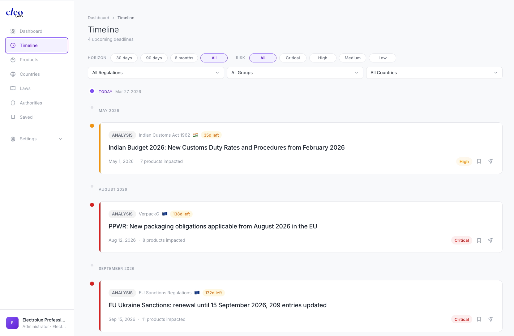
The timeline shows a vertical calendar of upcoming dates, grouped by month, anchored on an "TODAY" marker. Each event shows a countdown in days ("X days remaining"), the event title, and the associated regulation.
Quick combo for executive reporting: Set Horizon to "90 jours" + Risk to "Critique". Screenshot the result. That's your one-slide executive summary.
🔖 Bookmarks
From the dashboard or any signal card, click the 🔖 icon to save a signal. It's immediately added here — the icon turns filled to confirm. Remove bookmarks once you've acted on each signal.
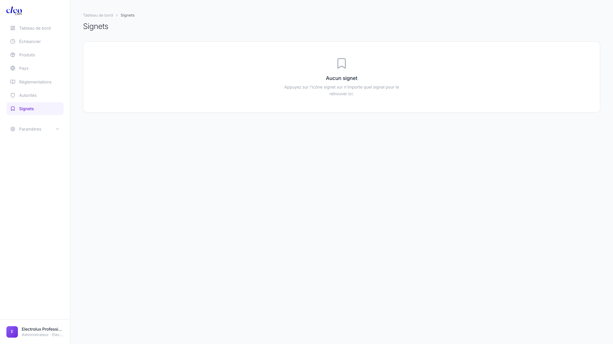
👤 Profile
Set your role correctly before anything else — it determines how every signal summary is written for you. Same regulatory event, completely different output depending on your function.
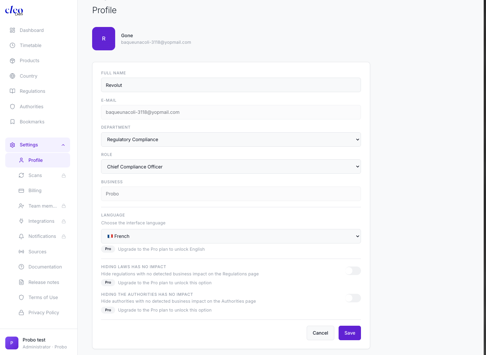
What to configure
- Department — Legal, Compliance, Quality, Product, etc. This is critical: your department and role directly impact the entire platform — every summary, action plan, and risk assessment is tailored to your function.
- Role — DPO, Quality Manager, Legal Counsel, etc.
- Language — FR 🇫🇷 or EN 🇬🇧 — controls the language of all AI-generated content
- Slack Member ID — optional, for direct Slack DMs on critical alerts
Display shortcuts
- Hide laws without impact — declutter your Regulations page to show only what affects your products
- Hide authorities without impact — same idea for your Authorities page
⚡ Scans
Control how often Cleo checks for new regulatory activity. Set it once and forget it — or override per regulation when the stakes are higher.
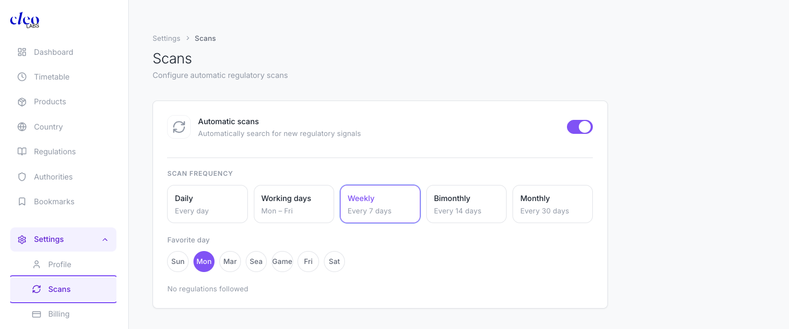
Turn on Automatic scans and pick a frequency: Daily · Weekdays · Weekly · Bi-weekly · Monthly. Set a preferred day-of-week for scheduled scans to run.
How scans work:
- Each scan checks the last 30 days of regulatory news for all your monitored regulations.
- You can override the frequency per regulation on the Regulations page.
- Regulations with compliance deadlines within 30 days are automatically scanned weekly regardless of this setting.
Need fresh data right now? Hit Refresh on the Dashboard.
💳 Billing
Track your credit usage and manage your plan. Credits are consumed by scans — check your balance before running bulk analyses.
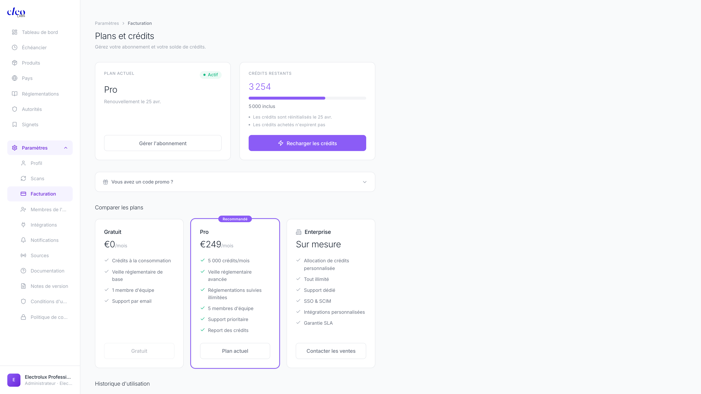
Your current plan and remaining credits (e.g. 3,254 / 5,000) are shown at the top. Click "Top up credits" to top up anytime. Unused credits roll over on the Pro plan.
| Plan | Price | Includes |
|---|---|---|
| Gratuit | €0/mois | Pay-as-you-go credits · Basic monitoring · 1 team member · Email support |
| Pro ⭐ | €249/mois | 5,000 credits/month · Advanced monitoring · Unlimited tracked regulations · 5 team members · Priority support · Credit rollover |
| Enterprise | Custom | Custom credit allocation · Unlimited everything · Dedicated support · SSO & SCIM · Custom integrations · SLA guarantee |
The usage history table shows date, scan name, steps completed, and credits consumed — useful for auditing your scan activity.
🔗 Integrations
Slack is currently the only available integration. More are coming. Connect it to get compliance alerts where your team already works.
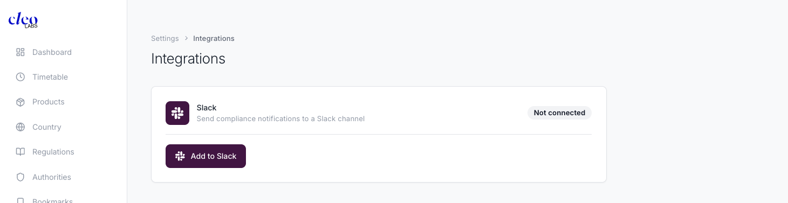
Slack
Click "Add to Slack" to authorize and select your channel. Once connected, configure which alert types route to Slack in Notifications settings. Add your Slack Member ID in Profile to receive direct messages for Critical-level alerts.
#regulatory-alerts channel for your compliance team. Route Critical and Deadline alerts there — nothing gets missed.👥 Team
Invite colleagues so everyone works from the same regulatory picture — with summaries tailored to their own role.
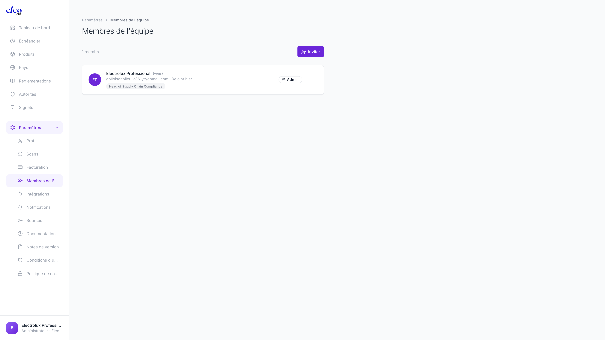
Click Invite and enter an email address. The invitee creates their own account and configures their own Profile — meaning they automatically receive summaries calibrated to their department and role, not yours.
| Plan | Team Members |
|---|---|
| Gratuit | 1 |
| Pro | Up to 5 |
| Enterprise | Unlimited |
🔔 Notifications
Choose what triggers an email. Turn on what you'll actually act on — noise kills attention.
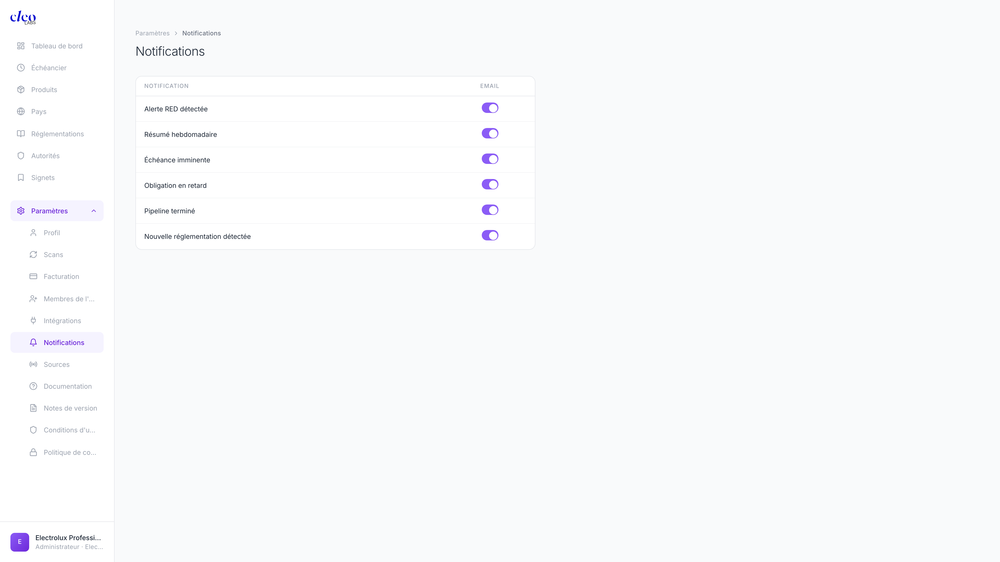
| Notification | When to enable |
|---|---|
| Critical alert | Always — never miss a Critical-level signal |
| Weekly digest | If you don't check the dashboard daily |
| Upcoming deadline | Always — gives you lead time to prepare |
| Overdue obligation | Always — this means you're already late |
| Scan complete | Optional — useful when you trigger manual scans |
| New regulation detected | If you want to review every new addition to your scope |
🔍 Sources
Control where Cleo gets its intelligence. Blocking noisy sources and prioritizing authoritative ones directly improves signal quality.
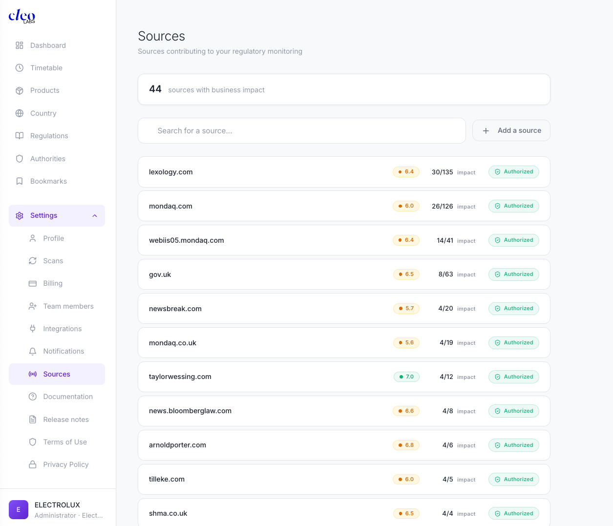
Each source shows its domain (e.g. federalregister.gov), a quality score badge, article count, impact count, and status: Active (active) / Blocked (blocked) / Preferred (prioritized).
- Block a source — click to set "Blocked". Cleo stops using it in future analyses. Use this for sources that consistently produce irrelevant signals.
- Prefer a source — mark as "Preferred". These are weighted higher in every scan. Use for the most authoritative sources in your sector.
- Add a custom source — click "+ Add a source" and enter the domain. Mark it Preferred and it'll be prioritized from the next scan onwards.
📌 Good to know
💳 What happens at zero credits?
🔔 Notification defaults
🔒 Data & privacy
📤 Export
🗑 Account deletion
⏱ Support response times
- Gratuit: email support, best-effort response.
- Pro: priority email support, response within 24h on business days.
- Enterprise: dedicated Customer Success Manager, SLA-backed response times.